These have results per 1-second interval for: insert rate (IPS), max insert response time, delete rate (DPS) and max delete response time.
The results are from 1 client while the test may have N clients where N > 1.
Deletes might not have been enabled for this benchmark step, in which case those graphs will show zero values.
Contents
my8028_rel_o2nofp.cz11a_c24r64: IPS
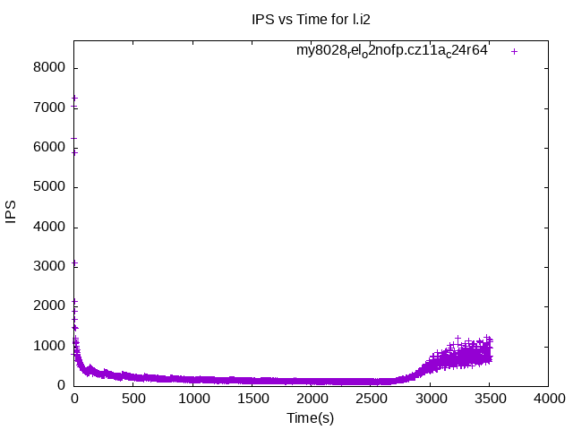my8028_rel_o2nofp.cz11a_c24r64
my8028_rel_o2nofp.cz11a_c24r64: max insert response time
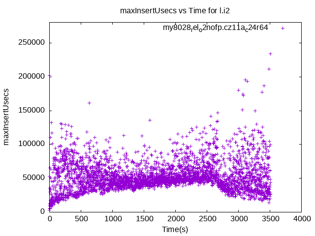my8028_rel_o2nofp.cz11a_c24r64
my8028_rel_o2nofp.cz11a_c24r64: DPS
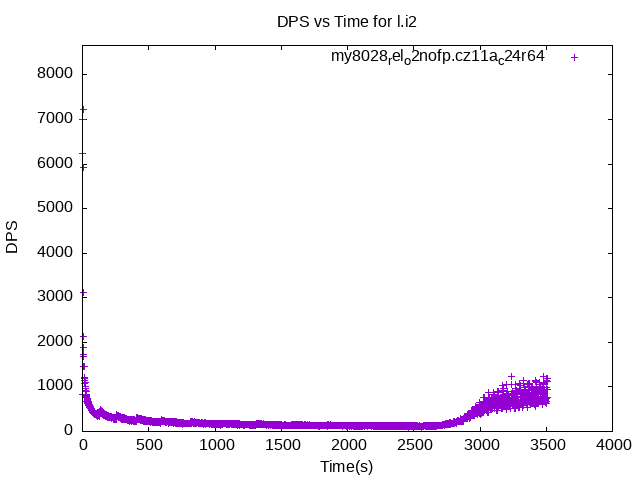my8028_rel_o2nofp.cz11a_c24r64
my8028_rel_o2nofp.cz11a_c24r64: max delete response time
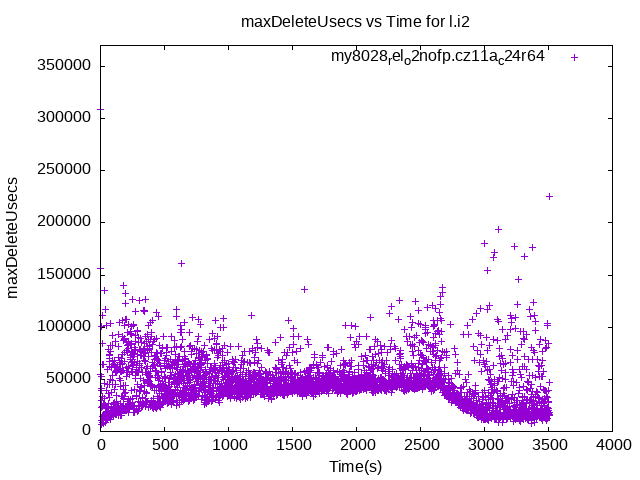my8028_rel_o2nofp.cz11a_c24r64
my8032_rel_o2nofp.cz11a_c24r64: IPS
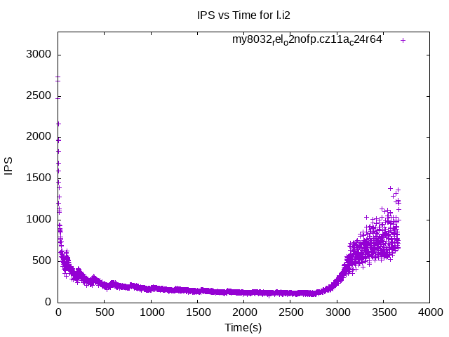my8032_rel_o2nofp.cz11a_c24r64
my8032_rel_o2nofp.cz11a_c24r64: max insert response time
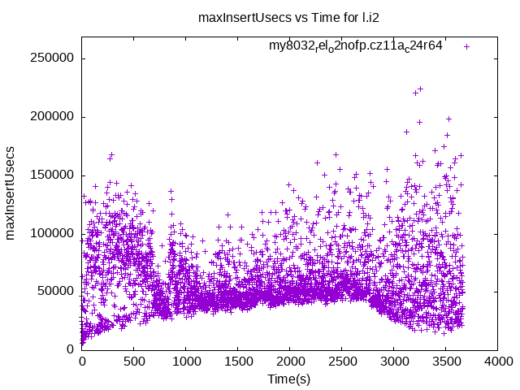my8032_rel_o2nofp.cz11a_c24r64
my8032_rel_o2nofp.cz11a_c24r64: DPS
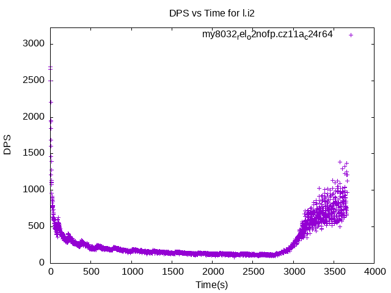my8032_rel_o2nofp.cz11a_c24r64
my8032_rel_o2nofp.cz11a_c24r64: max delete response time
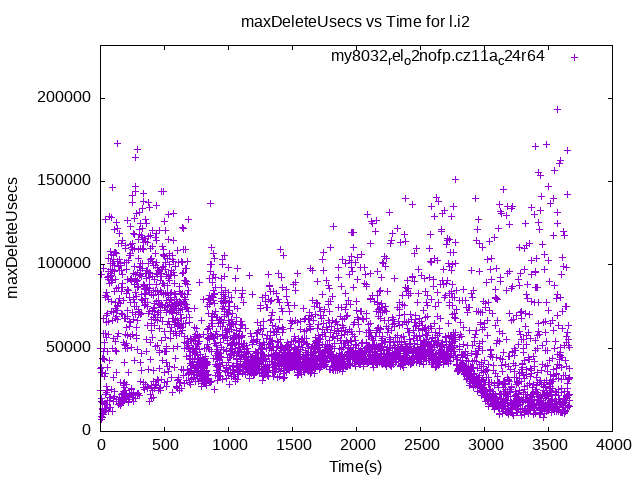my8032_rel_o2nofp.cz11a_c24r64
my8036_rel_o2nofp.cz11a_c24r64: IPS
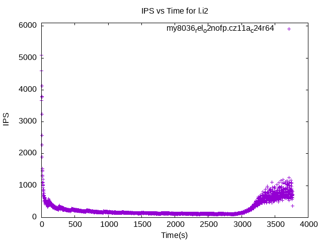my8036_rel_o2nofp.cz11a_c24r64
my8036_rel_o2nofp.cz11a_c24r64: max insert response time
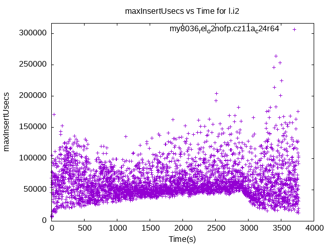my8036_rel_o2nofp.cz11a_c24r64
my8036_rel_o2nofp.cz11a_c24r64: DPS
my8036_rel_o2nofp.cz11a_c24r64
my8036_rel_o2nofp.cz11a_c24r64: max delete response time
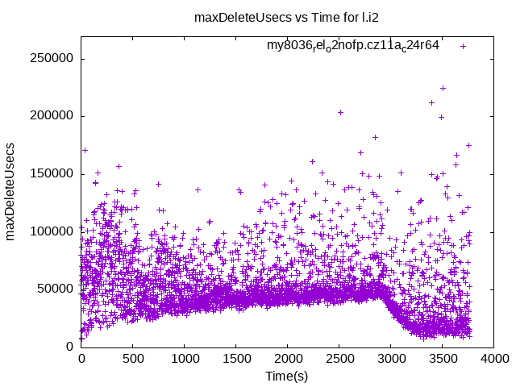my8036_rel_o2nofp.cz11a_c24r64
my8037_rel_o2nofp.cz11a_c24r64: IPS
 my8037_rel_o2nofp.cz11a_c24r64
my8037_rel_o2nofp.cz11a_c24r64
my8037_rel_o2nofp.cz11a_c24r64: max insert response time
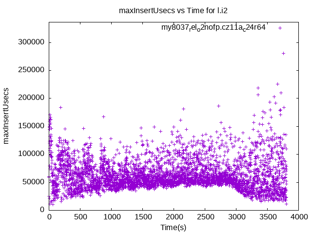my8037_rel_o2nofp.cz11a_c24r64
my8037_rel_o2nofp.cz11a_c24r64: DPS
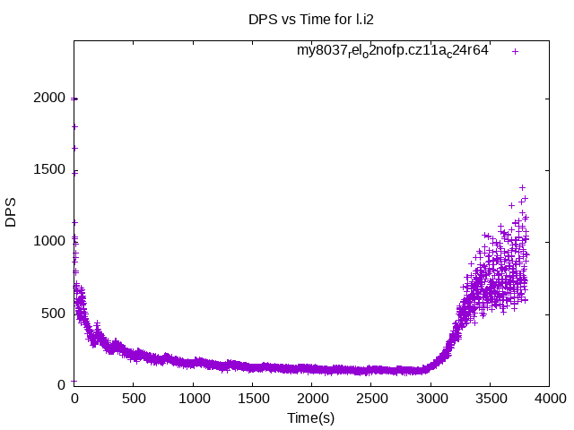my8037_rel_o2nofp.cz11a_c24r64
my8037_rel_o2nofp.cz11a_c24r64: max delete response time
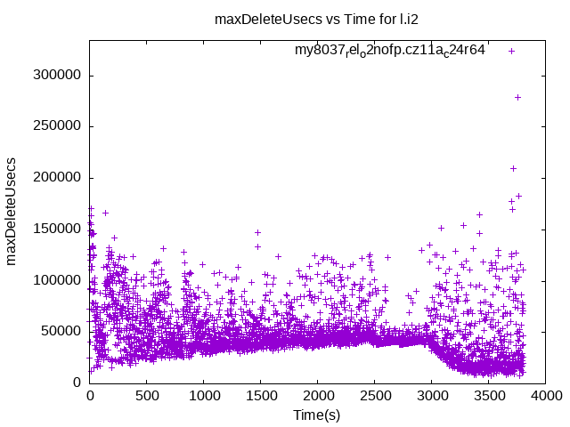my8037_rel_o2nofp.cz11a_c24r64
my8038_rel_o2nofp.cz11a_c24r64: IPS
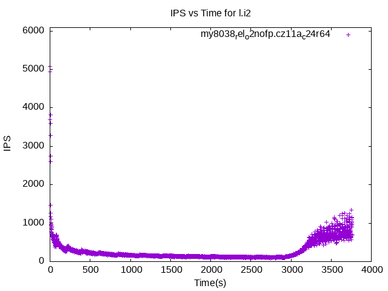my8038_rel_o2nofp.cz11a_c24r64
my8038_rel_o2nofp.cz11a_c24r64: max insert response time
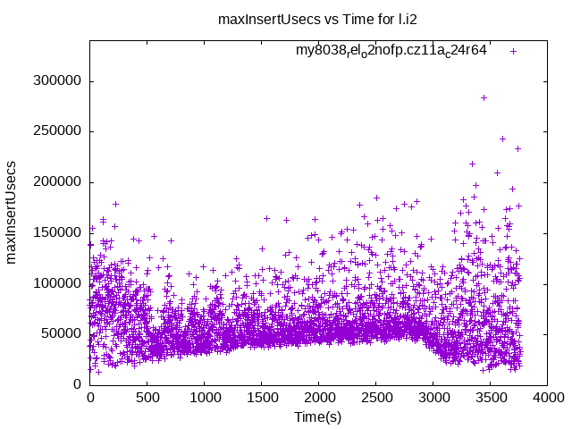my8038_rel_o2nofp.cz11a_c24r64
my8038_rel_o2nofp.cz11a_c24r64: DPS
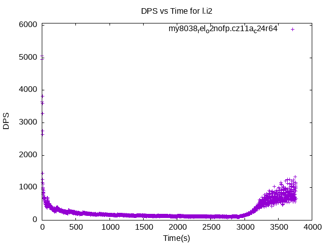my8038_rel_o2nofp.cz11a_c24r64
my8038_rel_o2nofp.cz11a_c24r64: max delete response time
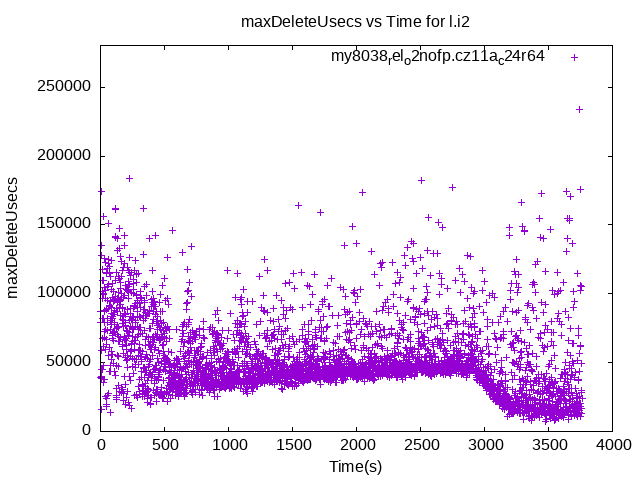my8038_rel_o2nofp.cz11a_c24r64